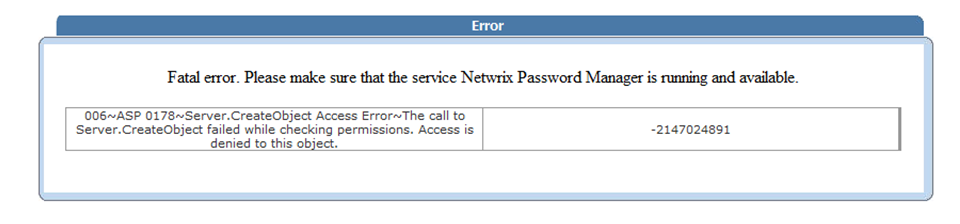
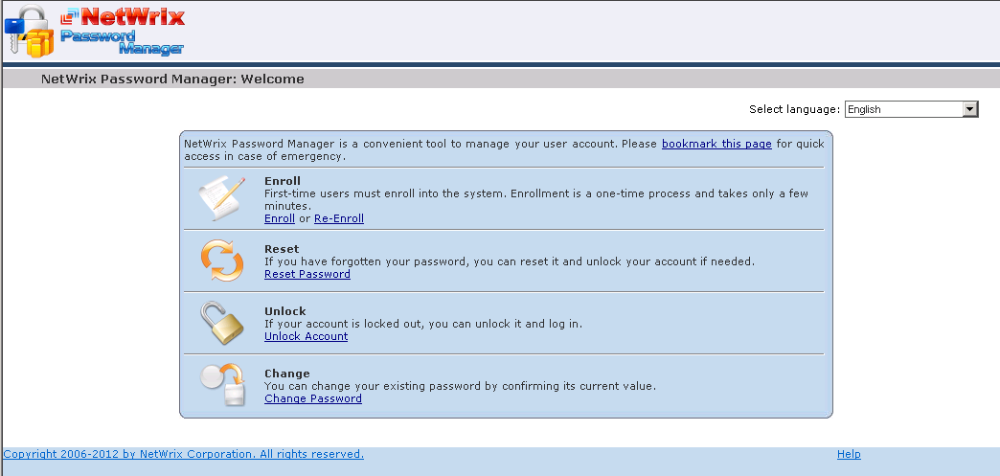
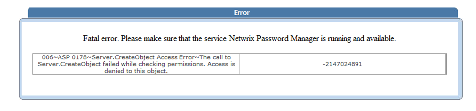
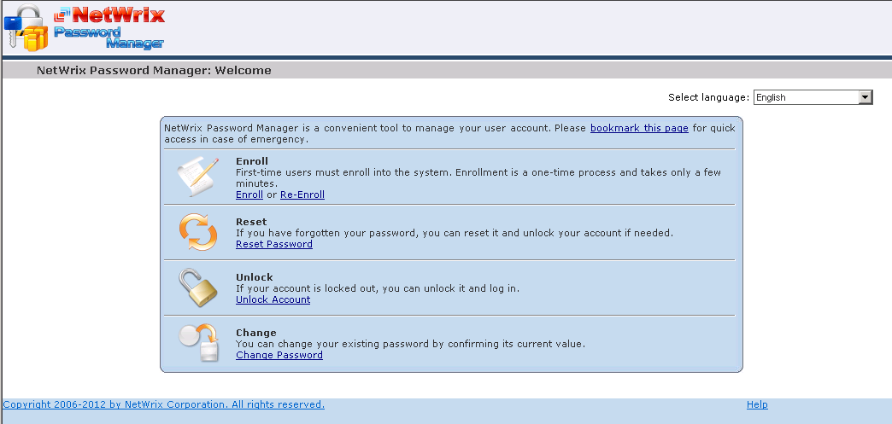

Admin and Helpdesk portals return Server.CreateObject Access error:

while the Self-Service portal works fine:

This scenario is specific to use of a non-domain frontend server configuration. With a non-domain frontend you need to use local accounts to authenticate to the Admin and Helpdesk portals, and the product tries to use credentials of these local accounts to connect to the backend, and these accounts do not have any permissions on the backend.
It is necessary to create a local user on the backend server with the same account name/password as the domain user you are trying to login with. Add this user to the Administrators and Distributed COM Users groups on the backend server.

while the Self-Service portal works fine:

This scenario is specific to use of a non-domain frontend server configuration. With a non-domain frontend you need to use local accounts to authenticate to the Admin and Helpdesk portals, and the product tries to use credentials of these local accounts to connect to the backend, and these accounts do not have any permissions on the backend.
It is necessary to create a local user on the backend server with the same account name/password as the domain user you are trying to login with. Add this user to the Administrators and Distributed COM Users groups on the backend server.